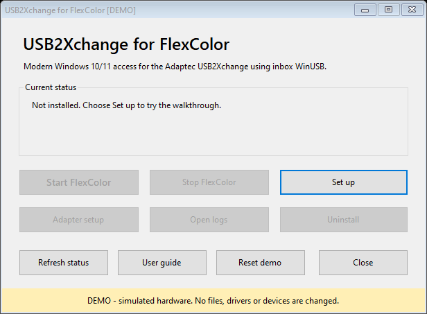
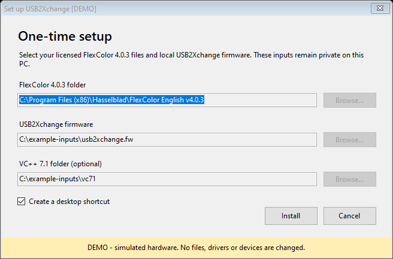
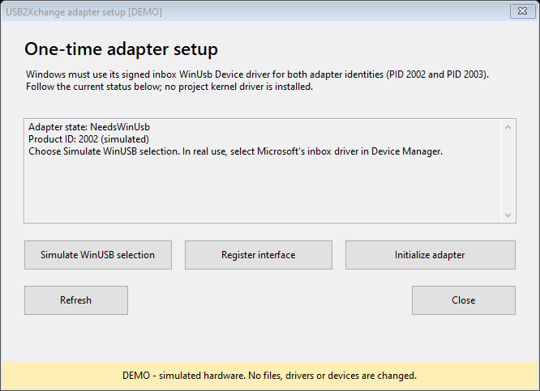
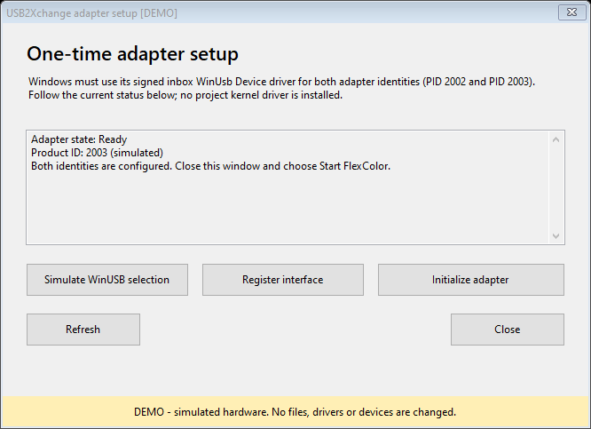
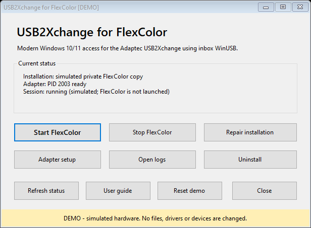

USB2Xchange for FlexColor: illustrated user guide
Start with the demo if you want to explore without connecting a scanner.
The manager can rehearse setup, adapter initialization and starting/stopping a
session without FlexColor, firmware, administrator rights or USB hardware.
Experimental software — use at your own risk. Real operation can cause
failed scans, data loss, device malfunction or hardware damage. No warranty,
recovery or individual support is promised. Read DISCLAIMER.
1. Download and open
Open the v0.1.0-poc.1 download page.
Expand Assets if GitHub collapses the list. You do not need to build from
source to try this release.
| Download |
Use it for |
USB2Xchange-Setup-<commit>.exe |
Easiest way to open the setup manager. It extracts the same project files as the runtime ZIP. |
usb2xchange-runtime-<commit>.zip |
Inspectable package. Extract all files, open the extracted folder, then run USB2Xchange.exe. Keep its subfolders together. |
usb2xchange-source-<commit>.zip |
Developers who want to inspect or rebuild the exact source. This is not the ready-to-run application. |
*.sha256.txt |
Expected SHA-256 values and the full source commit for the adjacent assets. |
The <commit> suffix identifies the build, not another file you must download.
Choose either setup or runtime ZIP. Both are unsigned community builds.
Before opening a download, compare its hash with the release manifest:
Get-FileHash -Algorithm SHA256 .\USB2Xchange-Setup-<commit>.exe
Use the actual filename. Check that the entire hash matches. An unsigned or
unknown-publisher warning is expected; decide whether you trust the reviewed
source and release. Do not globally disable Windows protections. See
Installation for signature inspection and package checks.
2. Try it with no hardware
In the extracted runtime folder, double-click Try demo.cmd. Alternatively,
open the manager and choose Try demo. A separate window opens with [DEMO]
in its title and a yellow banner. From a terminal the equivalent is:
.\USB2Xchange.exe --demo

These pictures are exports of the actual Windows Forms application in demo
mode, using its own rendering. They are not drawings of a proposed interface
or evidence of connected hardware. Every example path and adapter state is
simulated. Windows themes and scaling may look different on your PC.
- Choose Set up. Example paths are already filled in; the demo does not read them.
- Choose Install, then dismiss the success message. No files or shortcuts are installed.
- Open Adapter setup. Choose Simulate WinUSB selection, then Register interface.
- Choose Initialize adapter. The simulated device changes from PID 2002 to PID 2003.
- Choose Simulate WinUSB selection and Register interface again for PID 2003.
- Close Adapter setup. Choose Start FlexColor. The manager reports a simulated session; no FlexColor process opens.
- Try Stop FlexColor, Repair installation or Open logs. They return simulated results. Reset demo starts over.
Closing the demo discards its state. Demo Uninstall resets its memory and
closes it; it cannot remove a real installation. To work with real equipment,
close the demo and open the normal manager. The demo never switches to live
hardware in the same process.
This rehearses the manager workflow, not the FlexColor scanning interface.
It does not simulate preview images, scan quality, SCSI timing, firmware
transfers, UAC or Windows driver installation. Existing offline protocol/ASPI
tests cover separate logic. Real scanner acceptance remains necessary.
3. Prepare for real setup
Use Windows 10 or 11 x64, Windows PowerShell 5.1 and .NET Framework 4.8.
Read Windows prerequisites. The supported combination
is English FlexColor 4.0.3, Adaptec USB2Xchange and FlexTight Precision II
at SCSI target 5, LUN 0. Other versions and adapters are not qualified.
Before you start, gather these separately licensed inputs:
| Input |
Where it belongs in setup |
Complete English FlexColor 4.0.3 folder, including its Firmware folder |
FlexColor 4.0.3 folder |
Exact usb2xchange.fw adapter image |
USB2Xchange firmware |
| Exact x86 VC++ 7.1 DLLs, if absent from the supported automatic locations |
VC++ 7.1 folder (optional) |
None of those proprietary files are in the release. Follow
required files and exact hashes for acquisition,
validation and the local adapter-firmware extractor. A modern VC++ runtime
is not a replacement for the exact legacy DLLs. Do not run the old Adaptec
installer or install its XP driver.
Keep the scanner off during preparation. Have a VM snapshot or another tested
rollback method before changing a device's driver selection.
4. Set up the private application copy
Open the normal manager (no demo banner), then choose Set up.

In real mode, use Browse... to select your own verified files. The VC++ field
may be left empty when the required exact DLLs are already in the FlexColor
source root or %WINDIR%\SysWOW64; otherwise select their containing folder.
Choose whether to create a desktop shortcut, then Install.
Setup validates the package and inputs, creates a private FlexColor copy under
%LOCALAPPDATA%\USB2Xchange, and patches that copy. Your original licensed
installation stays the source for repairs. If asked, open the installed manager.
Use its USB2Xchange Manager and FlexColor with USB2Xchange shortcuts for
later sessions. The per-user application setup does not require elevation.
If setup rejects a file, check its exact version, size and hash. Do not rename
another version to satisfy a filename. The troubleshooting guide
explains common prerequisite and package errors.
Connect only the intended USB2Xchange. Open Adapter setup in the manager.
The adapter first appears as a firmware loader (PID 2002), then as an
operational device (PID 2003). Windows must remember WinUSB for both.

In real mode, the left button reads Open Device Manager. The demo-only
Simulate WinUSB selection button never appears in normal operation.
- In Device Manager, open the adapter's Properties → Details → Hardware Ids.
Verify
USB\VID_03F3&PID_2002 before changing anything. A new device may be
under Other devices with Code 28.
- Choose Update driver → Browse my computer → Let me pick → Universal Serial
Bus devices → WinUsb Device, using Microsoft's signed inbox driver.
- Back in the manager, choose Refresh.
NeedsInterfaceRegistration means
the driver is selected but the project interface GUID is still missing.
- Choose Register interface. Read the first-use experimental risk warning;
it defaults to No. If you choose to proceed, this real action requests UAC
elevation to register only the present adapter's interface and restart it.
- At
Ready, PID 2002, choose Initialize adapter. This loads the supplied
adapter firmware and waits for re-enumeration as PID 2003.
- First-time initialization can time out while the new PID is unbound. Check
Hardware Ids again, then repeat WinUSB selection and Register interface
for
USB\VID_03F3&PID_2003.

You are finished when PID 2003 is Ready. Close Adapter setup. Full details,
the interface GUID and reconnect notes are in WinUSB setup.
No project kernel driver, test-signing, root certificate or Secure Boot change
is needed for this path. Do not select a different device just because its
name looks similar.
6. Start, scan and stop
Follow the scanner manual for safe SCSI cabling, termination, holder loading and
power sequence. Set the supported scanner to target 5/LUN 0. Once connected
and powered correctly, choose Start FlexColor or use FlexColor with
USB2Xchange. Subsequent starts handle normal adapter firmware initialization.

In real operation Start checks the scanner identity and launches the prepared
private FlexColor process. Exact expected identities are Imacon / SCSI Loader /
L302 or Imacon / FlexTight II / M333. FlexColor normally performs the scanner
microcode initialization itself.
Within the real FlexColor application, choose your holder and settings, run
Preview, then Scan, and save outside the installation to a backed-up
folder. Check saved dimensions, depth and appearance. The guide deliberately
does not portray a simulated scan as successful hardware operation.
To cancel a scan, use Stop inside FlexColor and allow cleanup to finish.
The manager's Stop FlexColor closes its managed application session; it is
not the scan-cancel button. Avoid USB/SCSI disconnects during operation. See
daily use for output checks and sharpening notes.
7. When something needs attention
| What you see |
What to do next |
| Not installed / Start disabled |
Choose Set up with the exact licensed inputs. |
| Disconnected |
Check adapter USB connection; choose Refresh. |
| Multiple / ambiguous adapters |
Leave only the intended adapter connected before proceeding. |
| NeedsWinUsb |
Verify that PID in Device Manager, then select the inbox WinUSB driver. |
| NeedsInterfaceRegistration |
Choose Register interface for the currently present PID. |
| PID 2002 Ready |
Initialize adapter, then configure PID 2003 if this is first setup. |
| PID 2003 Ready, but Start fails |
Check scanner power, SCSI termination/target 5 and the exact error. Avoid repeated blind retries. |
| Missing files or hash mismatch |
Check versions and source files; use Repair installation only after correcting the prerequisite. |
Open logs opens the private Usb2XchangeLogs folder in real mode. Review and
redact paths/device identifiers before sharing a small relevant excerpt. Do not
upload proprietary files, firmware, full logs or personal scans.
Repair installation verifies and rebuilds the private copy from the
configured sources. Uninstall removes this user's private copy, settings
and shortcuts; it leaves the Microsoft WinUSB selection in place. Close
FlexColor first and keep scans outside the install tree. Read
uninstall and rollback before removal.
For unresolved problems use Troubleshooting, then the
issue templates.
Report the release, Windows version, exact error and whether you were in demo
or real mode. Read known limitations: the updated GUI
workflow still needs complete clean-VM/hardware qualification. Demo success
does not change that boundary.